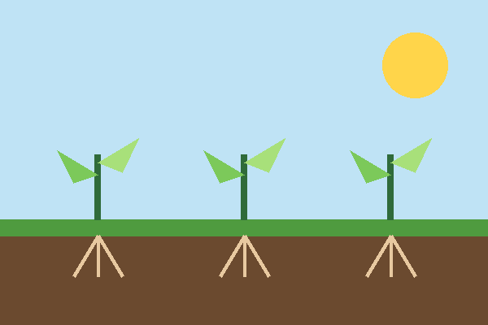

About Me
Let's just say...I turn coffee and complex logic into intuitive user experiences. Currently, I'm being Mentored under the tutelage of "The Tech~Prophet", learning how to build, curate solutions & connect with fellow developers, mentors, and teams to solve meaningful problems.
My Garden

Listen: A Short Introduction
Watch: A Sprout Grows
A three-second animation of a small plant growing from the soil.